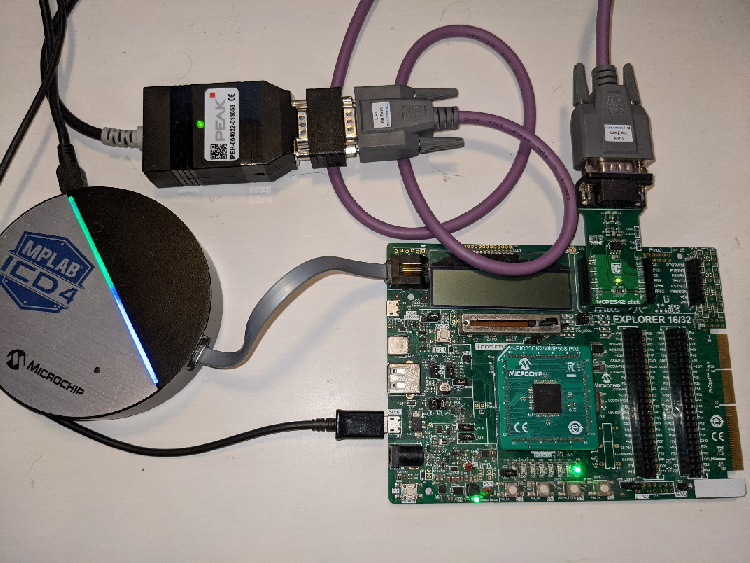
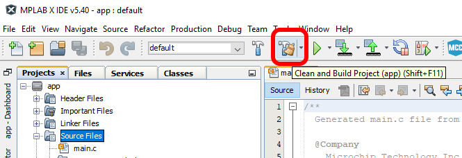
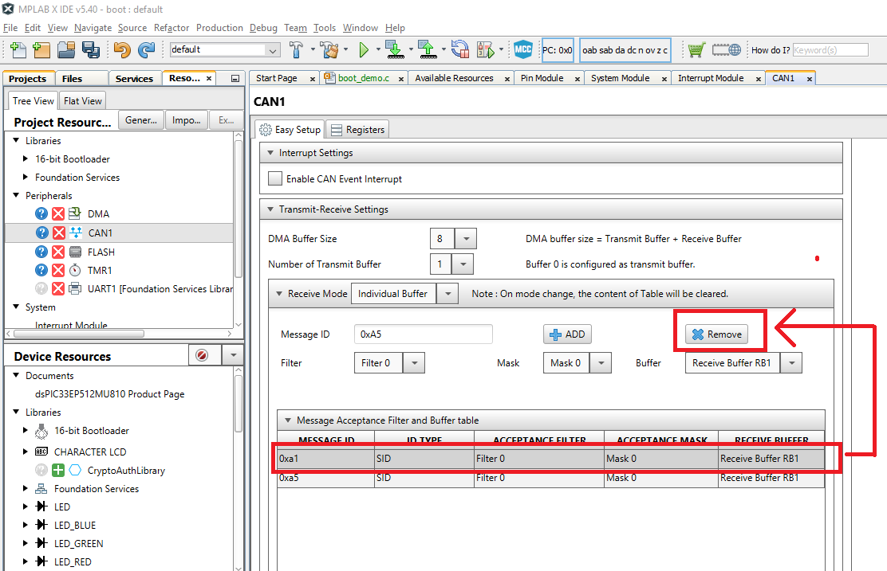

Bootloader Example Using the CAN Physical Layer with the ECAN Controller
Introduction
This example shows how to use the pre-configured CAN demo on the dsPIC33EP512MU810 processor module for the Explorer
16/32 board.
This demo uses the ISO 15765-2 CAN Transport Protocol layer to transport custom bootloader commands over the CAN bus
as seen in the diagram below:

Tools
Software
- The unzipped example project files, boot.X and app.X
- Microchip MPLAB® X version 5.40 or later
- Microchip MPLAB® XC16 C compiler version 1.60 or later
- Unified Bootloader Host Application v1.17.0 or later
- Microchip MPLAB® Code Configurator version v4.0.1 or later (optional – for code configuration)
- 16-bit Bootloader MCC module version 1.18.3 or later (optional – for code configuration)
- The drivers for the selected Peak CAN-FD protocol analayzer/protocol generator (available at https://www.peak-system.com/Home.59.0.html?&L=1)
Hardware
- Explorer 16/32 Demo board
- dsPIC33EP512MU810 Processor module or other Processors with the Microchip ECAN module
- A programmer/debugger of choice
- A Peak CAN protocol analyzer/protocol generator. A PCAN-USB FD was used for development of this demo
(https://www.peak-system.com/PCAN-USB-FD.365.0.html?&L=1).
- A CAN cable
- An MCP2542 click board (https://www.mikroe.com/mcp2542-click) or another appropriate CAN transceiver click
board.
It is important that this is just a transceiver and not a CAN-to-SPI/UART converter chip.
- A micro USB cable, a USB-Type C cable, or a 9v power adapter for the Explorer 16/32 (for powering the board).
Running the Demo
Hardware Configuration
- With the Explorer 16/32 Board detached from any power source, programmer, or USB connection:
- Connect the dsPIC33EP512MU810 processor module into the socket on the Explorer 16/32 Board such that the notched
edge is
in the top left corner matching the silk screen on the Explorer 16/32
- Connect the MCP2542 daughter board into the mikroBUS™ A slot.
- Connect the programmer to the Explorer 16/32
- Connect the Peak analyzer/generator to your computer.
- Connect the Peak analyzer/generator to the MCP2543 daughter board with the CAN cable.
- Power the board using either USB cable or the 9 volt adapter plug.

Programming the Bootloader
- Open the boot.x project in MPLAB® X
- Press the “Make and Program” button on the top bar.
- Select the appropriate programmer if prompted.
- The project should compile and program successfully.
- Verify the D3 LED is solid on the Explorer 16/32. This indicates the bootloader is running.
Building the Application
- Open the app.X project in MPLAB® X
- Press the “Clean and Build Project” button on the top bar.
NOTE: Make sure not to hit the program button. This will program the application code over the bootloader
that was
just programmed.

- The project should compile cleanly. app.X/dist/default/production/app.X.production.hex should be generated.
- Verify that the D3 LED is still solid.
- If the D3 LED is blinking instead of D3 solid, then the application code was programmed instead of only
compiled.
Go back to the “Programming the Bootloader” stage and re-program the bootloader.
Loading the Application
- Open the Universal Bootloader Host Application tool (UBHA)
- Select the “PIC24/dsPIC” option from the “Device Architecture” selection drop down
- Select “CAN” from the protocol drop down selection box:
- Select the “Settings->CAN” option from the top menu
- Select the Peak protocol analyzer being used and the appropriate CAN configuration settings and press “Apply”
when
done. By default, the configuration for the demo are the following:
- Nominal bit rate: 125 kbits/sec
- Host to device ID: 0xA1
- Device to host ID: 0xA2
- Press the “Read Device Settings” button.
- The Application start address and Application end address fields should have updated. If it did not or if you
get a
communication error, please go back to the “Programming the Bootloader” stage to make sure the bootloader was
programmed correctly.
- Load the application hex file by selecting “File->Open/Load File (*.hex)”
- Select the file generated in the previous section: app.X/dist/default/production/app.X.production.hex
- Press “Program Device”. The application should program erase, program and readback verify correctly.
- After a few seconds, D3 should be blinking.
Customizing the Bootloader Project
The bootloader project can be opened in MCC and new modules can be added and configured as they normally would in MCC.
Additionally, the parameters in the Bootloader:Bootloader module can be re-configured.
Changing the CAN bitrate
The CAN bitrate of the bootloader can be easily changed. By default the bitrate is set to 125 kbits/second. To change
the bitrate, do the following:
- Open the bootloader project.
- Open the MCC plug-in by clicking on the MCC icon in the tool bar of MPLAB X.
- Select the CAN1 module from the project resources pane on the left navigation pane. This will open the CAN1
module settings in the main configuration window.
- Expand the "Bit Rate Settings" pane and make the desired bit rate changes.
- Re-generate the project by pressing the generate button in the project resources pane.
- Re-build/program the bootloader into the board.
- Re-open the settings window in the UBHA program.
- Change the nominal bit rate to match what was selected in MCC. NOTE: The Peak analyzer/generator is
limited to what bit rates it can generate so not all bit rates possible by the micro-controller can be realized by
this hardware generator. You are limited to the bit rates listed in the UBHA selection window.
- When the bit rate has been changed, press apply.
- You can now press the program button or read device settings button as before and the device should now be
communicating using the new bit rate selected.
Changing the Host to Device ID
This is changing the message ID of the messages sent from the PC bootloader host to the target board. Currently the same message ID must be used for both ISO 15765-2 message and flow control frames. To change the message ID used from host to device, do the following:
- Open the bootloader project.
- Open the MCC plug-in by clicking on the MCC icon in the tool bar of MPLAB X.
- Select the CAN1 module from the project resources pane on the left navigation pane. This will open the CAN1
module settings in the main configuration window.
- Expand the "Transmit-Receive Settings" pane.

- Add a new Message ID with the desired value. In this example we entered the value 0xA5 and then pressed the Add Button with the Blue "+". This adds the 0xa5 row to the "Message Acceptance Filter" table below.

- After the filter 0xa5 was added, we need to delete the old value of 0xa1 value, by clicking on the row containing 0xa1, and pressing the Remove button.

- Re-generate the project by pressing the generate button in the project resources pane.
- Re-build/program the bootloader into the board.
- Re-open the settings window in the UBHA program.
- Change the "Host to Device ID" field to match the value used in the MCC filter object settings, in this example 0xA5.
- When the message ID has been changed, press apply.
- You can now press the program button or read device settings button as before and the device should now be
communicating using the new message IDs from the host to the device.
Changing the Device To Host ID
This is changing the message ID of the messages sent from the target board back to the PC host. Currently the same message ID must be used for both ISO 15765-2 message and flow control frames. To change the message ID used from device to host, do the following:
- Open the bootloader project.
- Open the can_tp_config.h file in the "Headers/MCC Generated Files" section of the MPLAB X project.
- Change the values for the CAN_TP_MESSAGE_ID_DATA and CAN_TP_MESSAGE_ID_FLOW_CONTROL to the desired value. In this example it is changed from 0xA2 to 0xA4.
NOTE: Due to a constraint in the UBHA hos program, the same message ID must be used for both the data and flow control messages. Please make these two values the same.
- Re-build/program the bootloader into the board.
- Re-open the settings window in the UBHA program.
- Change the "Device To Host ID" field to match the value used in can_tp_config.h file, in this example 0xA4.
- When the message ID has been changed, press apply.
- You can now press the program button or read device settings button as before and the device should now be
communicating using the new message IDs from the device to the host.
Customizing the Application Project
The application MCC configuration can be opened and modules can be added or modified as desired.
Known Limitations
- Only CAN classic is supported. For CAN-FD support, use the CAN-FD demo as a starting point instead.
Terminology
ISO 15765-2 / CAN-TP / ISO-TP
ISO 15765-2 is a transport protocol layer designed for usage with the CAN bus. The original CAN bus specification
allows for up to 8 bytes of data to be in a single frame. Larger messages need to be fragmented into smaller frames
for transmission on the CAN bus. ISO 15765-2 defines a protocol for fragmenting larger messages and sending them
over the CAN bus. It also incorporates flexibility in handling the data transmission through the use of flow control
packets to control the frequency of when packets arrive as well allowing to pause the transmission of a message
until the receiver is ready to receive the message.
MCC
Microchip’s MPLAB® Code Configurator tool. This tool helps configure and generate source code for peripherals and
libraries.
UBHA - Unified Bootloader Host Application
The PC application used to send the firmware update and verification commands
from the PC to the board to complete the firmware update.
Trademarks
MPLAB® is a registered trademark of Microchip Technology Inc. All other trademarks are the property of their
respective owner.